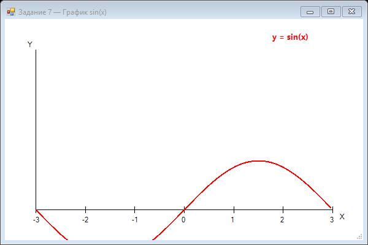

Урок 5.2: Построение графиков
Линейные графики
private void DrawLineChart(Graphics g, float[] data)
{
if (data.Length < 2) return;
PointF[] points = new PointF[data.Length];
for (int i = 0; i < data.Length; i++)
{
points[i] = new PointF(i * scaleX, data[i] * scaleY);
}
g.DrawLines(Pens.Blue, points);
// Рисование точек
foreach (var point in points)
{
g.FillEllipse(Brushes.Red, point.X - 3, point.Y - 3, 6, 6);
}
}Столбчатые диаграммы
private void DrawBarChart(Graphics g, float[] data)
{
float barWidth = this.Width / (float)data.Length;
float maxValue = data.Max();
float scale = this.Height / maxValue;
for (int i = 0; i < data.Length; i++)
{
float barHeight = data[i] * scale;
float x = i * barWidth;
float y = this.Height - barHeight;
g.FillRectangle(Brushes.Blue, x, y, barWidth - 2, barHeight);
g.DrawRectangle(Pens.Black, x, y, barWidth - 2, barHeight);
}
}Круговые диаграммы
private void DrawPieChart(Graphics g, float[] data, string[] labels)
{
float total = data.Sum();
float startAngle = 0;
Rectangle rect = new Rectangle(50, 50, 300, 300);
Color[] colors = { Color.Red, Color.Blue, Color.Green,
Color.Yellow, Color.Orange };
for (int i = 0; i < data.Length; i++)
{
float sweepAngle = (data[i] / total) * 360;
using (SolidBrush brush = new SolidBrush(colors[i % colors.Length]))
{
g.FillPie(brush, rect, startAngle, sweepAngle);
g.DrawPie(Pens.Black, rect, startAngle, sweepAngle);
}
startAngle += sweepAngle;
}
}Легенда и подписи
private void DrawLegend(Graphics g, string[] labels, Color[] colors)
{
int y = 10;
for (int i = 0; i < labels.Length; i++)
{
g.FillRectangle(new SolidBrush(colors[i]), 10, y, 20, 15);
g.DrawString(labels[i], this.Font, Brushes.Black, 35, y);
y += 20;
}
}📝 Пример задания — график sin(x) (Task07)
Рисует оси координат, тики от −π до π, а затем синусоиду красным пером через список точек:
using System;
using System.Collections.Generic;
using System.Drawing;
using System.Windows.Forms;
namespace CSharpGraphicsApp
{
public class Task07_SineGraph : Form
{
public Task07_SineGraph()
{
Text = "Задание 7 — График sin(x)";
Size = new Size(600, 400);
BackColor = Color.White;
DoubleBuffered = true;
Paint += Form1_Paint;
}
private void Form1_Paint(object sender, PaintEventArgs e)
{
Graphics g = e.Graphics;
int width = ClientSize.Width;
int height = ClientSize.Height;
// Оси
g.DrawLine(Pens.Black, 50, height - 50, width - 50, height - 50);
g.DrawLine(Pens.Black, 50, 50, 50, height - 50);
g.DrawString("X", SystemFonts.DefaultFont, Brushes.Black, width - 40, height - 45);
g.DrawString("Y", SystemFonts.DefaultFont, Brushes.Black, 35, 35);
// Тики по оси X
for (int i = -3; i <= 3; i++)
{
float x = 50 + (i + 3) * ((width - 100) / 6f);
g.DrawLine(Pens.Black, x, height - 55, x, height - 45);
g.DrawString(i.ToString(), SystemFonts.DefaultFont,
Brushes.Black, x - 6, height - 40);
}
// Точки sin(x) от -π до π
var points = new List<PointF>();
for (float x = -(float)Math.PI; x <= Math.PI; x += 0.05f)
{
float y = (float)Math.Sin(x);
float screenX = 50 + (x + (float)Math.PI) /
(2 * (float)Math.PI) * (width - 100);
float screenY = height - 50 - y * 80;
points.Add(new PointF(screenX, screenY));
}
using (Pen pen = new Pen(Color.Red, 2))
g.DrawLines(pen, points.ToArray());
g.DrawString("y = sin(x)",
new Font("Segoe UI", 10, FontStyle.Bold), Brushes.Red, width - 150, 20);
}
}
}Практическое задание
Задание: Построение графиков
- Создайте приложение для отображения данных
- Реализуйте линейный график, столбчатую и круговую диаграмму
- Добавьте легенду и подписи осей
Задание по аналогии: График функции (Task07)
По аналогии с Task07_SineGraph постройте график произвольной функции с осями и метками.
- Нарисуйте горизонтальную ось X (Y = height - 50) и вертикальную ось Y (X = 50).
- Добавьте тики и числовые метки по оси X от -3 до 3.
- Вычислите список точек для выбранной функции (например, cos(x) или x²) в диапазоне [-π, π].
- Используйте формулу масштабирования:
screenX = 50 + (x + π) / (2π) * (width - 100),screenY = height - 50 - y * scale. - Нарисуйте кривую через
g.DrawLinesи добавьте подпись формулы.
Пример результата выполнения задания:

Скриншот программы (Task07)
Пример результата выполнения задания:
Скриншот программы (Task07)
💡 Совет: Подберите значение
scale (ширину одной единицы в пикселях) под размер формы, чтобы график не выходил за границы.
Проверка знаний
Ответьте на вопросы, чтобы проверить, насколько хорошо вы усвоили материал:
1. Какой тип диаграммы лучше подходит для отображения долей?
2. Какой тип графика лучше для отображения изменений во времени?
3. Что такое легенда в графике?
4. Что такое легенда на графике?